Sonecas e fraldas
A posição da cabeça em cada soneca e as fraldas do dia, com cor e consistência. O histórico deixa corrigir tudo.
 Amamenta
Amamenta
Para mães e pais de recém-nascidos
Um toque para começar a mamada, o lado certo para a próxima e o aviso na hora de mamar de novo. E tem mais: leite ordenhado, crescimento e um guia do que o seu bebê aprende a cada mês.
Baixar no Google Play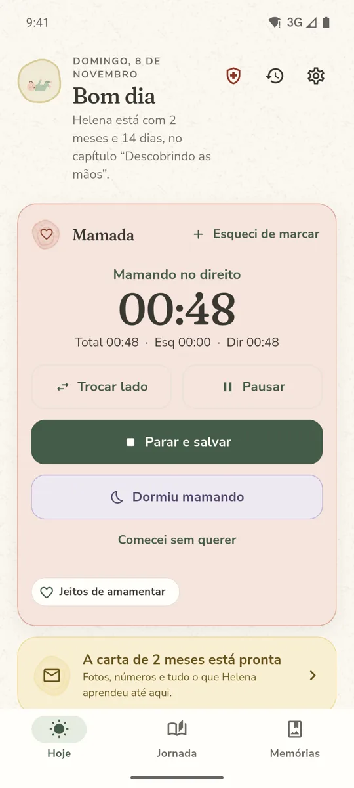
Instalar é simples
O Amamenta está na Google Play, em fase de testes com as primeiras famílias. Por isso o Google pede um passo a mais: entrar na lista de testadores, com a mesma conta que você já usa no celular. É de graça, sem cadastro no app e ninguém vê o seu e-mail.
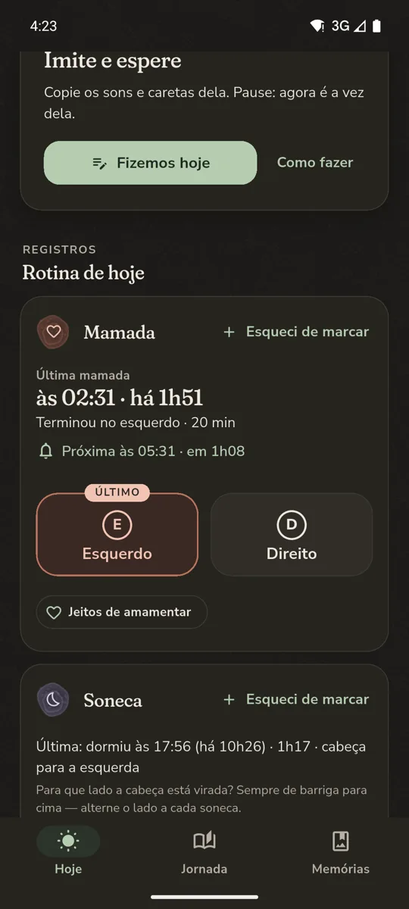
Feito para as 3 da manhã
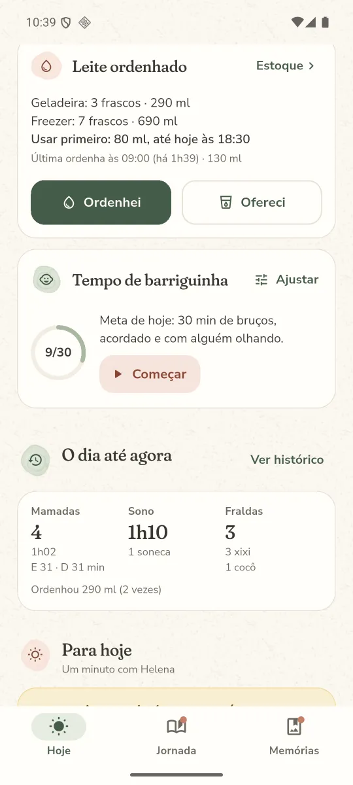
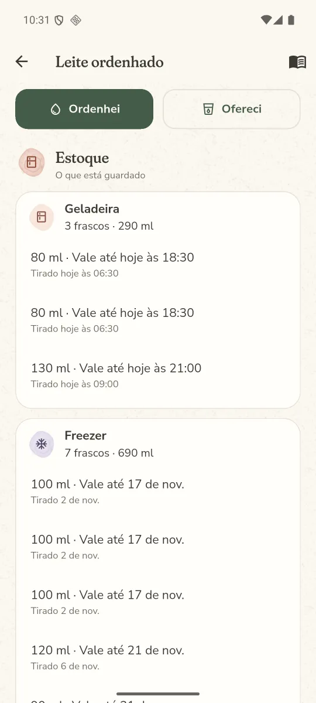
Para quem ordenha
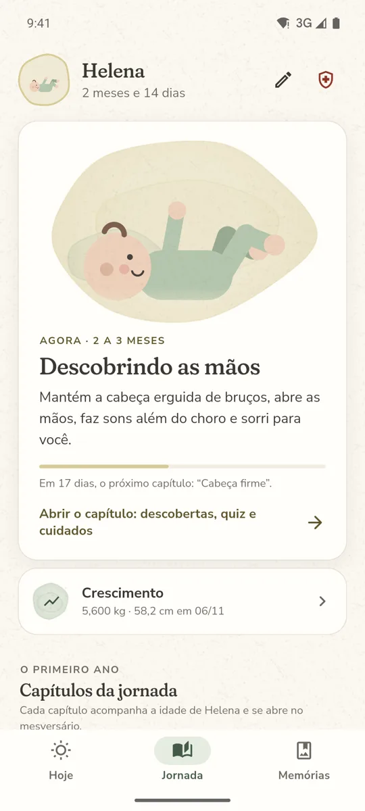
O primeiro ano, mês a mês
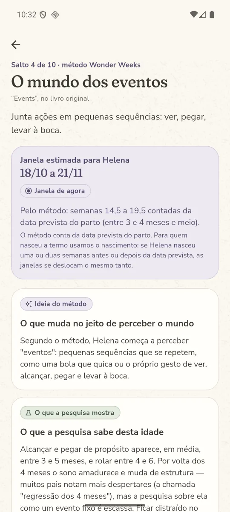
Quando o bebê muda do nada
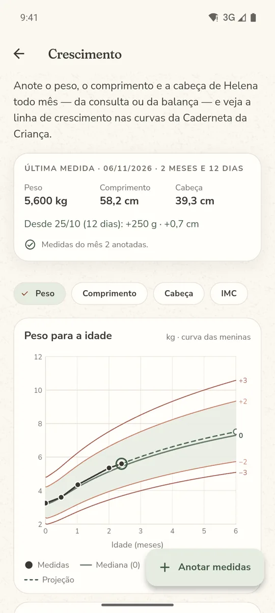
Para levar à consulta
Para a hora da dúvida
Deslize para ver mais
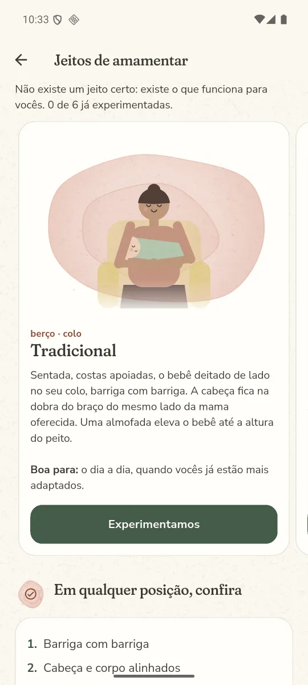
Ilustrados, com a dica de quando cada um ajuda mais.
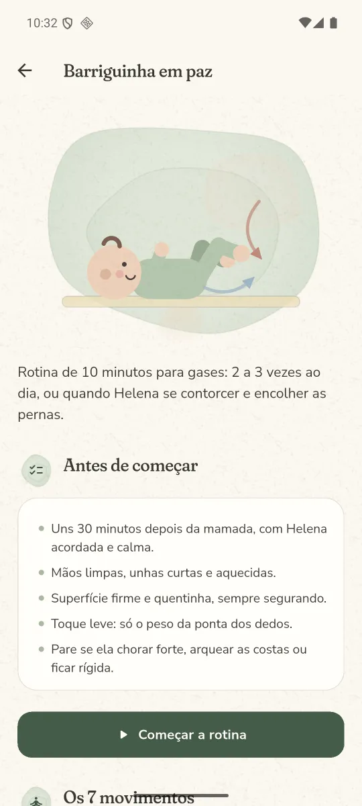
Rotina guiada de 10 minutos para os gases, com 7 movimentos.
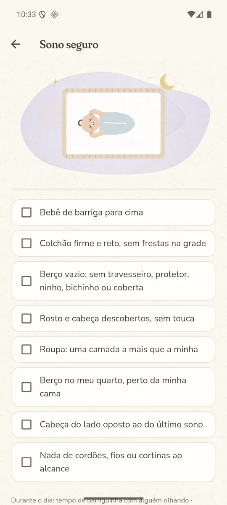
Os cuidados do berço, um por um, na hora de deitar.
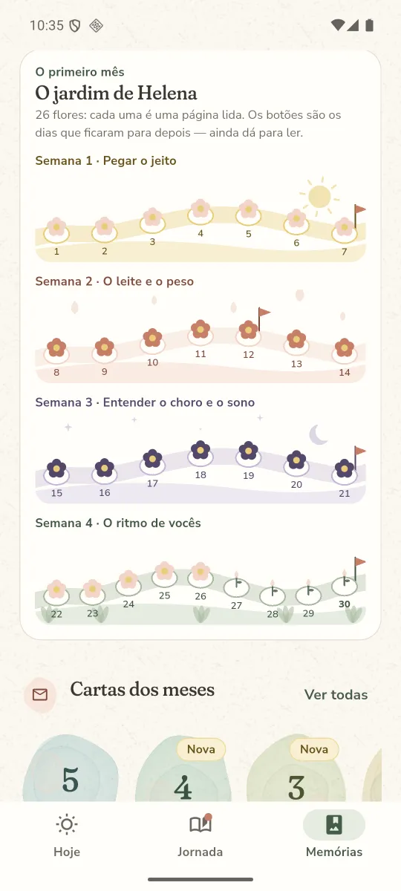
Um guia de 30 dias em que cada página lida vira uma flor.
Muito além do cronômetro
A posição da cabeça em cada soneca e as fraldas do dia, com cor e consistência. O histórico deixa corrigir tudo.
Os sinais que pedem atenção e os telefones que importam, como SAMU e Disque Saúde, a um toque.
As cartas de cada mês viram um livro em PDF do primeiro ano, com fotos, números e as frases de vocês.
Uma página por dia de vida, com a amamentação explicada dia a dia, no momento em que mais bate a dúvida.
Estante das cartas do mês, um retrato por mês, marcos observados, 28 lembranças para colecionar e fotos extras.
Guarde uma cópia no Drive ou onde preferir e restaure num celular novo. Nada sai do aparelho sem você escolher.
Mamadas, sono, fraldas, medidas e fotos são guardados no próprio aparelho. Não tem conta, não tem anúncio e o desenvolvedor não recebe nenhum dado seu. Um backup só sai do celular quando você escolhe para onde. Leia a política de privacidade.
O Amamenta está em fase de testes na Google Play. Até abrir para todo mundo, o Google só libera a instalação para quem está na lista. É só um clique com a sua conta Google, e ninguém vê o seu e-mail. As atualizações chegam sozinhas pela Play Store.
Não. O app é grátis, não pede cadastro e não tem anúncios. Quem quiser pode apoiar o projeto com um Pix, mas isso não libera nada: o app é o mesmo para todo mundo.
Sim. Tudo é guardado no seu celular, então o cronômetro, os registros e os guias funcionam a qualquer hora.
Por enquanto, só no Android.
Não. É material educativo, em linguagem simples: avisa o que vale perguntar e quais sinais pedem atenção, mas nunca dá diagnóstico.